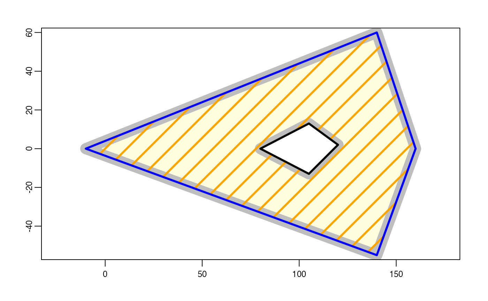

fill.RdRemove the holes in SpatVector polygons. If inverse=TRUE the holes are returned (as polygons).
Or remove "holes" in SpatRasters.
# S4 method for class 'SpatVector'
fillHoles(x, inverse=FALSE)
# S4 method for class 'SpatRaster'
fillHoles(x, nearest=FALSE)SpatVector
x <- rbind(c(50,0), c(140,60), c(160,0), c(140,-55))
hole <- rbind(c(80,0), c(105,13), c(120,2), c(105,-13))
z <- rbind(cbind(object=1, part=1, x, hole=0),
cbind(object=1, part=1, hole, hole=1))
colnames(z)[3:4] <- c('x', 'y')
p <- vect(z, "polygons", atts=data.frame(id=1), crs="local")
p
#> class : SpatVector
#> geometry : polygons
#> dimensions : 1, 1 (geometries, attributes)
#> extent : 50, 160, -55, 60 (xmin, xmax, ymin, ymax)
#> coord. ref. : Cartesian (Meter)
#> names : id
#> type : <num>
#> values : 1
f <- fillHoles(p)
g <- fillHoles(p, inverse=TRUE)
plot(p, lwd=16, border="gray", col="light yellow")
polys(f, border="blue", lwd=3, density=4, col="orange")
polys(g, col="white", lwd=3)

## SpatRaster
v <- vect(c("POLYGON ((81.572 36.629, 98.508 9.624, 80 0, 99.902 -10.349,
84.662 -34.709, 50 0, 81.572 36.629))", "POLYGON ((140 60, 160 0,
140 -55, 84.662 -34.709, 99.902 -10.349, 105 -13, 120 2, 105 13,
98.508 9.624, 81.572 36.629, 140 60))"))
v <- rbind(v, shift(p ,-120))
v$ID <- 1:nrow(v)
r <- rasterize(v, rast(xmin=-80, crs="local"), "ID")
f1 <- fillHoles(r)
f2 <- fillHoles(r, nearest=TRUE)